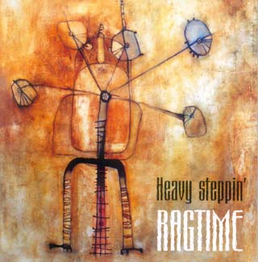

|

|
| | Heavy Steppin' | |
| 1. | Please, Don't Drive Me Away (Erwin/Brown) | (4:03) |
| 2. | Hard Way (McDaniel/Walker) | (5:17) |
| 3. | Boogie Boy (Shomakhov) | (3:01) |
| 4. | Don't Answer The Door (Johnson) | (7:35) |
| 5. | I Go Crazy (J.Brown) | (2:38) |
| 6. | Good Morning Little Schoolgirl (Williamson) | (7:11) |
| 7. | Hoochie Coochie Man (Morganfield) | (4:51) |
| 8. | Don't Burn Down That Bridge (King/Wells) | (4:58) |
| 9. | Heavy Steppin' (Shomakhov) | (5:48) |
| 10. | Don't You Even Care (Cray) | (5:30) |
| 11. | Don't Waste My Time (Shomakhov) | (5:30) |
| 12. | Angel (Hendrix) | (4:41) |
|
RAGTIME are:
Arsen Shomakhov - guitar, vocals
Aslan Zhantuyev - Bass
Sultanbek (Bek) Mamyshev - drums
Recorded and mixed at "IREN records", Nalchik, Russia
February - April 2002.
Recorded and mixed by A.Klimenko
Produced by A.Shomakhov
Cover painting by Zhanna Shomakhova
Photos by S.Veshikov, I.Lukianov
The album was inspired by "Beavis and Butthead do America" (Cornholio rules!)
Many thanx to:
F.Romanenko, A.Evdokimov, D.Krasivov and blues.ru (Blues in Russia)
for support, assistance and for encouraging us to keep on doing what we do.
(Whaaazzzzzzzuppppppppppp!!!!!!)
Thanx to A.Agranovsky, M.Miroshnichenko, I.Yudina, A.Kurashinov ("KAN
records"), B.Zhashuyev and "Taulan", A.Antonov ("IREN records"), and to all of
our friends and supporters.
Special thanx and love to our families for patience and understanding.
Mail to: ragtime@blues.ru
Visit us at: ragtime.blues.ru
Регтайм "Heavy Steppin'"
Не так уж много времени прошло с тех пор, как Регтайм впервые появился в двух
столицах на публике и завоевал на концертах сердца первых своих поклонников, а
вот уж и материализовался результат их кропотливого труда - пластинка, которая у
вас в руках.
В уже далеком 1987 году Арсен, Аслан и Бек впервые встретились на репетиции у
друзей и после небольшого джема решили играть вместе. Свое нынешнее название
"Регтайм" трио обрело в 91-м. Причем, это слово возникло не благодаря
танцевальному фортепианному стилю, а перекочевало из названия книжки Доктороу,
вдохновившей Формана на гениальный фильм, а Арсена Шомахова на то, чтобы назвать
группу.
Музыканты Регтайма это - Арсен Шомахов, замечательно поющий гитарист, с
которым трудно соревноваться по части виртуозности техники, де-факто композитор
и аранжировщик. Аслан Жантуев на бас-гитаре, предпочитающий бессмысленной погоне
за Пасториусом глубокое понимание и надежность при исполнении относительно
простого только с виду блюзового материала. А также, Бек Мамишев на ударных,
который начал стучать по коробкам в раннем детстве, и который любит эту музыку
неподдельно и, похоже, больше всех в группе.
Стилистически музыку Регтайма на данный момент можно охарактеризовать
терминами блюз и блюз-рок. Период становления группы проходил в Нальчике, в
суровых условиях музыкальной провинции и при отсутствии того богатого
музыкального материала, который у нас с вами есть сейчас. Поэтому первыми
блюзовыми пластинками, которые попали к Арсену и серьезно впечатлили его, были
записи относительно популярных гитарных героев Джими Хендрикса, Стива Рея Вона и
Джонни Винтера. Это во многом и определило нынешний формат группы - гитарное
трио с репертуаром, тяготеющим в блюз-рок. Однако, в отличие от многочисленных
отечественных групп с похожей историей, Регтайм никогда не пытался "передрать"
оригинальное исполнение стандарта. Не было и другого распространенного греха -
взять из песни текст, простой рифф, включить примочку пожестче и пошуметь также,
как это было в предыдущей трудноотличимой песне. Со стандартами Регтайм
поступает наиболее правильным, на мой взгляд, образом. Они берут из песни то,
что в ней заводит - эмоцию и музыкальную идею, заложенную автором, добавляют
свое, по-своему аранжируют и очень аккуратно и одновременно эмоционально
исполняют.
Но время гитарных стандартов для группы уже прошло, а от старого репертуара
осталась единственная песня Angel, которую Арсен исполняет очень бережно и
точно, не растеряв ничего, что было у Хендрикса в оригинале. Репертуар Регтайма
сегодня по-прежнему тяготеет к блюзу с довольно популярным (в нашей деревне -
прим. ред.) уклоном в рок, но при этом он совсем не банален! Регтайм играет
песни, которые не известны широко, но обязательно содержат что-то интересное и
яркое в музыкальном плане.
Два стандарта от отца блюза Мадди Уотерза Hoochie Coochie Man и Good Morning
Little Schoolgirl исполнены в высшей степени нестандартно. На концертах
различных не очень хороших групп я наслышался бесконечных перепевок Мадди
Уотерза от тех, кто пытался играть "как Он", но у них не вышло. Как правило,
подобные вещи приводят к риторическим вопросам "Могут ли белые играть блюз?".
Наверное, в точности так, как Мадди, - не могут. Но не все понимают, что это и
не нужно! Регтайм изначально откинул идею скопировать оригинал, и в результате
получилось очень интересно. Hoochie Coochie Man - скучнейшая и замыленная песня
в исполнении армии блюзменов, лишенных фантазии в выборе репертуара, у Регтайма
превратилась в песню с ярким риффом и ритмическим рисунком. А Good Morning
Little Schoolgirl - в длинную полумедитативную гитарную импровизацию с выходом
за пределы гармонии оригинальной композиции.
Особую гордость этой пластинки составляют три собственные композиции Арсена
Шомахова, которые, на мой взгляд, демонстрируют его незаурядный музыкальный
талант, свободу и незажатость гармонического мышления. Быстрая композиция Boogie
Boy написана под влиянием би-бопа в исполнении Чарли Паркера и построена по
схожим правилам. Она буквально захватывает дух не только быстрой темой, которая
интересно накладывается на изменения гармонии в квадрате, но и сменами
ритмического рисунка, что необычайно разнообразит песню. Когда я слышал эту
песню первые несколько раз, я спрашивал себя, неужели еще можно сочинить
абсолютно новую естественную композицию, используя только глубоко традиционные,
хорошо известные блюзовые элементы?
Собственная песня со словами "Don't Waste My Time" построена на эксплуатации
простого и эмоционального гитарного ритмичного риффа, что, на мой взгляд, очень
даже оправдано, ибо он заводит, и от него можно оттолкнуться в импровизации. А
что еще нужно для блюза? Очень похожая идея заложена в песню "Hold On" - хит
гениального норвежского исполнителя Видара Бюска, в которой он не стесняется
играть неприлично простой по форме, но весьма зажигательный рифф. Вообще, тот
факт, что названия 5 песен с альбома начинаются словами Don't... наталкивает на
туманную мысль о том, что, наверное, есть что-то характерное в их музыке, ибо
корреляция между названием и музыкально-эмоциональным посылом в песне явно
должна существовать.
Инструментальная композиция Шомахова "Heavy Steppin'", которая дала название
альбому, представляет собой стилистический сплав элементов джаз-рока в стиле
Джона Скофилда, а также мощных блюзовых элементов. Песня длинная, но чрезвычайно
разнообразная. Тема и ритмический рисунок непрерывно развиваются на протяжении
всех 6 минут без нудных повторов и проходных кусков. Различные по темпу и
эмоциональному окрасу фрагменты очень гармонично, естественно и бесшовно
переходят друг в друга, а у слушателя захватывает дух, когда он наблюдает за
тем, как джаз-роковая заумь плавно превращается в мощные блюзовые поддержанные
басом полу-шаффлы. Подобное органичное слияние музыкальных стилей у меня
вызывает восхищение, а также наталкивает на мысли о единстве природы хорошей
музыки разных направлений.
Для группы эта пластинка в первую очередь - фиксация настоящего момента в
творчестве, а во вторую - повод двигаться дальше: Результат, который достанется
слушателям, получился замечательный. Несмотря на специфику студийной работы, ибо
песни, исполняемые на концертах в едином эмоциональном порыве, в студии
вынужденно расчленяются на партии, которые должны быть выверены порой в ущерб
свободе импровизации. Регтайм очень хорошо справился со своей задачей,
продемонстрировав студийную сторону своего таланта. Если вы послушали пластинку,
я бы очень рекомендовал, по возможности, посетить живой концерт Регтайма,
который обычно никого не оставляет равнодушным. На концерте Арсен, Бек и Аслан
заводятся от собственной музыки вместе с публикой, импровизация Арсена
становится еще более тонкой и глубокой, а неконтролируемое блюзовое чувство
хлещет через край. Это нужно услышать!
Записи Регтайма, как я замечал и раньше, обладают удивительной особенностью:
с каждым следующим прослушиванием они нравятся все больше, и еще сильнее
завораживает ритмическая и гармоническая магия, а сама запись не надоедает, в
отличие от многих других эффектных на первый взгляд пластинок. Поэтому я бы
посоветовал слушателю подкрутить ручку громкости в правую сторону, откупорить
Будвайзера и прослушать в очередной раз замечательную пластинку Регтайма.
Федор Романенко, www.blues.ru
RAGTIME "Heavy steppin'"
It hasn't been too long since Ragtime first showed up in public in Moscow and
St.Petersburg and won recognition of their first fans. Now you have in your
hands the materialized result of their meticulous work.
The musicians met at their friends' rehearsal back in 1987. After a short jam
they made up their minds to play together. Their current name Ragtime was taken
in 1991 and has nothing to do with the early piano style of dance music, but in
fact was borrowed from Doctorow's novel, which once inspired Milos Forman to
make a brilliant movie.
The Ragtime are: Arsen Shomakhov - a guitar virtuoso with a remarkable
singing voice, Aslan Zhantuyev - a bass player who prefers reliability and deep
understanding of seemingly simple blues material to a useless pursuit of
Pastorius, and Sultanbek ("Bek") Mamyshev - a devoted drummer, who naturally
expresses himself in the music he seems to like even more than his band mates.
Stylistically the music of Ragtime can be described in terms of blues,
blues-rock and jazz-rock. The band grew up in a small provincial town of Nalchik
deprived of rich variety of music that you and I enjoy today. The first blues
records Arsen heard and was deeply impressed by, were the ones of guitar heroes
Jimi Hendrix, Stieve Ray Vaughan, Johnny Winter. This fact to a great extent
determined the current format of the band - a guitar trio with a taste for
blues-rock. However, unlike numerous bands of the similar history, Ragtime never
attempted to copy the standards, neither did they try to just use lyrics, a
simple riff, and a killing overdrive effect to give a noisy birth to another
undistinguishable song. Ragtime make use of emotion and musical ideas of the
author, add a flavor of their own, arrange and perform in a very accurate, yet
extremely emotional manner.
Apparently the band has already seen the time of guitar standards. Of old
repertoire they have only retained Hendrix's Angel, that Arsen plays very
carefully and precisely, trying not to lose a small bit of the original mood.
The Ragtime's repertoire still tends to be blues-rockish, but in no way a
trivial one! The songs they play are not too well known, but remarkable for
their bright musical ideas.
Two standards from the father of blues Muddy Waters Hoochie Coochie Man and
Good Morning Little Schoolgirl are done with a difference. I heard innumerous
versions of songs by Muddy Waters played by the bands, who would try hard to
play exactly like HE did and would certainly fail. This sort of thing eventually
leads to rhetorical questions "can white guys play the blues? ". Ragtime
initially rejected the idea of copying the material, and the result proved to be
interesting. That's how Hoochie Coochie Man - very dull versions of which have
been played by an army of bluesmen - turned into a song with a cool riff and
vivid rhythmical structure, whereas Good Morning Little Schoolgirl turned out a
long meditative guitar improvisation, going beyond the original harmony frames.
A part of this album the band can be proud of is the three tracks written by
Arsen Shomakhov, which in my opinion illustrate his outstanding musical talent
and freedom to understand harmony. An uptempo instrumental Boogie
Boy was
written under the influence of be-bop by Charlie Parker and built on the similar
rules. It can literally take your breath away - a fast theme running through the
blues harmony changes, the rhythmical pattern alternating to make the piece
truly diverse. The first time I listened to this piece I asked myself whether if
it was still possible to compose an absolutely new and natural work only using
traditional blues elements:
The song Don't Waste My
Time is built on a simple emotionally charged guitar
riff, which seems to me a very solid base for improvisation. What else does it
take to play the blues? A very similar idea is used in the song Hold on by a
brilliant Norwegian guitar artist Vidar Busk, where he feels at ease playing an
indecently simple in structure, yet a very absorbing riff. In general, that
names of 5 songs form the album start from "Don't" prompts the vague idea that
there's something unique to the music of Ragtime, as the correlation between the
charge of title, music and emotion should definitely exist.
An instrumental Heavy Steppin' by Shomakhov gave the name to the album. It is
a mixture of jazz-rock a-la John Scofield with powerful blues elements - a
lengthy, yet very versatile piece. The theme and the rhythm patterns
consistently develop free of dull repetitions. Parts different in tempo and
emotional color evolve naturally and seamlessly, leaving the listeners short of
breath as they follow jazz-rock complexity smoothly turning into bluesy
semi-shuffles backed up by powerful bass. Such a natural combination of music
styles is admirable and makes me think of the universal nature of good music of
different styles.
For the band this album is first of all an attempt to record the stage they
presently find themselves at, and also a good reason to move ahead. The result
turned out to be really great regardless of the peculiarities of studio work,
where the songs are to be divided into separate lines, being precise and dry and
sometimes hurting the freedom of improvisation, as opposed to the songs played
onstage in a shared emotional impulse. The Ragtime fulfilled their task
successfully and exposed the studio side of their talent. If you have already
listened to the CD, I strongly recommend to visit a live concert of Ragtime -
which as a rule leaves no one indifferent. The live performance of the guys is
extremely emotional as of their play an and the reaction of the listeners.
That's when Arsen's improvisations become finer and deeper and the uncontrolled
blues feeling becomes overwhelming. You should hear this!
The Ragtime's records as I've noticed before, have one curious peculiarity -
every time you hear them again you like them more and more. The magic of rhythm
and harmony overpowers you, and you don't get bored. Quite the opposite happens
when you give another try to some records catchy at first glance. That's why I
would recommend to pump up the volume, open up a Budweiser and listen to the
excellent album of Ragtime again.
Fedor Romanenko, www.blues.ru